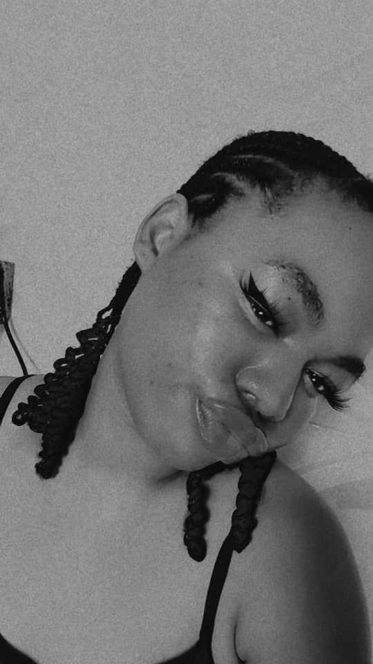

Make Una Come ooo! it is Jennybear's birthday
Start with playing the background music audio my love
Or you can choose to unmute the music video, anyone my love 😘.
Additional Features👇.
You can search other music videos on directly from here my love 👆
This one will take you to google search page my love 👆
Hi My Love
Gently scroll down to get the chills ☺️ I don go find emoji by fire by force
Happy Happy Happy Happy Happy Happy Happy Birthday Jennybear 🍻
Hurrayyyyyyyyyyyyyyyyyyyyy!!!!!!!!!!! It's my favorite, cutest, most amazing person's birthday 🥰. Where do I even begin from to talk about the goodness of God (you) in my life?
Let me start with I love you so much and you know that and I know you love me the same. Relationship is one crazy ride but I am thankful we are both doing it with Christ at the center. You are everything I prayed for and even more my love coupled with the fact that we are intentional and forever students to ourselves as we keep learning to be better.🤗

I want to pray for you from the depth of my heart today that the Lord will cause your face to shine upon the Earth. People will see you you and thank God for God in your life. You will be a blessing to many many generations to come as you already are to me. The Lord almighty will keep you from evil. Only good will locate and pursue you in Jesus Name, Amen. We shall not lack! Breakthrough ideas he will bless us with continually. This year of yours go and mark it, it will be the best year for you. 🙠We are thankful for what the Lord has done but trust me he is about to do even more.

I have known you for just a month to a year now and trust me you and I have both being better from how we were and it is such a beautiful thing cause truly that is what I define love as. I dont want to stop writing this my epistle but I think I am running out of words my darling. You are wonderfully and beautifully made my love. Please enjoy your day today o. Just be shinning teeth throughout today shogbo? Let me leave with this video. Salobuaaaaa!!!!!!!! See as person pikin fine now. Abeg help me send this to your mom say it takes only a queen to born a princess🙂.
But wait before I leave ehhn, Jennybear do me a favor. Help me get this to Mama and Pops. Dont be scared. 🙂 Mama and Pops, this David, Jennybear is the love of my life. Although this message might not get to you cause Jennybear might not send it but atleast I still tried. I am using this opportunity to say thank you for how you have sheltered her like your own. From the depth of my heart I pray may the good Lord reward you immensely🙏. For now this is my way of saying thank you (writing this epistle) via web dev. I know a time is coming that I will say thank you even more substantially.